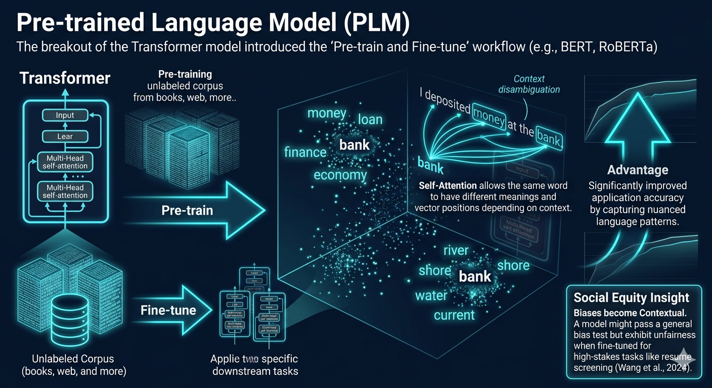

Pre-trained Language Model (PLM)
Refer to the Research Team,
Wang et al. (2024)
state that
The breakout of the Transformer model introduced the "Pre-train and Fine-tune" workflow (e.g.,
BERT, RoBERTa).
Mechanism: Self-Attention mechanisms, these models don't just look at
fixed vectors; they understand context. The same word (e.g., "bank") can have different vector
positions depending on whether the sentence is about money or a river.
Advantage: This significantly improved application accuracy by capturing
nuanced language laws.
Social Equity Insight: Biases become Contextual. A model might pass a
general bias test but exhibit unfairness when fine-tuned for specific high-stakes tasks like
resume screening
